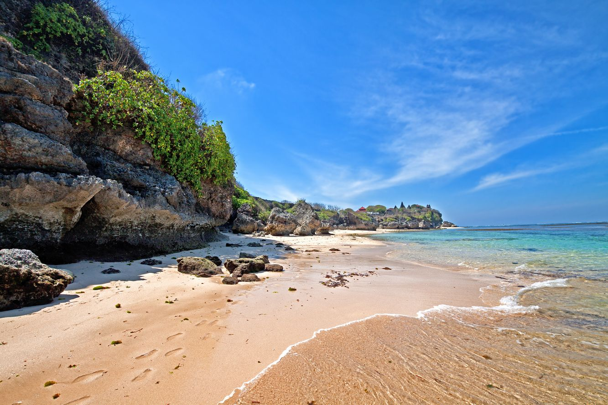
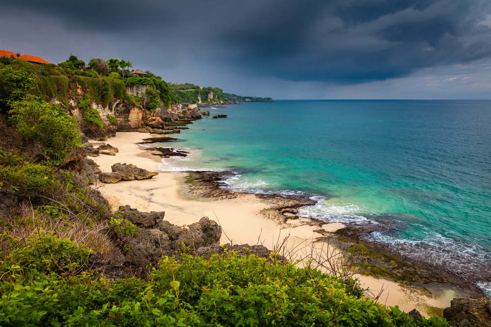
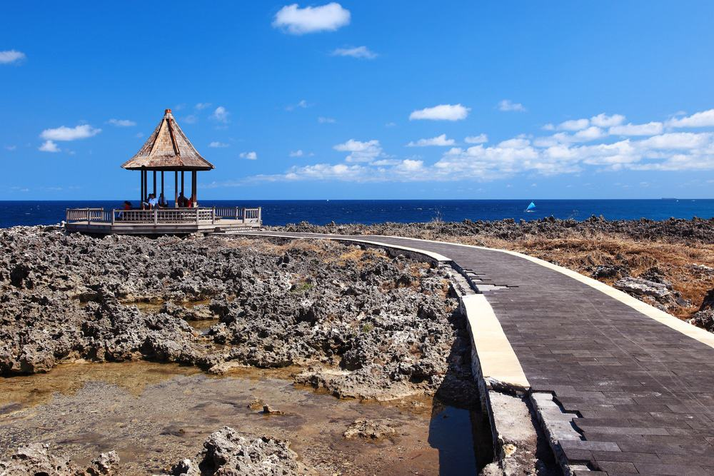

The Nusa Dua Tourism Area is one of the world's best tourism destination developments to date. For more than 40 years, the realization of the Nusa Dua development consistently adheres to spatial zoning design, shoreline boundaries, landscaping concept, utilities design and security system as set out in the development master plan prepared in 1972.

Geger Beach
Geger beach merupakan salah satu pantai yang berada di nusa dua.Berbeda dengan kuta dan seminyak yang sangat ramai, pantai satu iini masih sangat sepi dan seperti private beach.
anda ingin liburan ke pantai pasir putih di bali yang bagus untuk anak anak berenang, maka pantai geger sangat cocok untuk anda kunjungi.
Balangan beach
Pantai balangan bali, lokasinya jauh dari pusat keramaian kota denpasar dan hiruk pikuk kemacetan, membuat balangan menjadi pilihan wisatawan untuk berlibur.
jika anda berangkat dari bandara International Ngurah Rai menuju ke lokasi balangan beach menempuh jarak 20 kilometer dan membutuhkan waktu 55 menit.


water Blow
Berbeda dari kebanyakan pantai di bali, Water blow nusa dua memiliki semburan ombak yang sangat kuat karena berhadapan langsung dengan samudera hindia.
semburan ombak saat menghantam batu karang tebing menanampilkan pesona menarik yang bisa anda abadikan.
Club Med beach
Buka mata Anda untuk pengalaman paling kaya yang ditawarkan Bali. Club Med Bali mengundang Anda ke liburan yang luar biasa untuk seluruh keluarga. Selami petualangan luar ruangan dan nikmati semua alam; meremajakan tubuh Anda; nikmati rasa otentik dan hargai momen berseni. Terhubung dengan jiwa Bali melalui pengalaman unik di Club Med..
Leave Criticism and Suggestions
Leave your comments and suggestions here. The data you enter will be guaranteed to be kept confidential